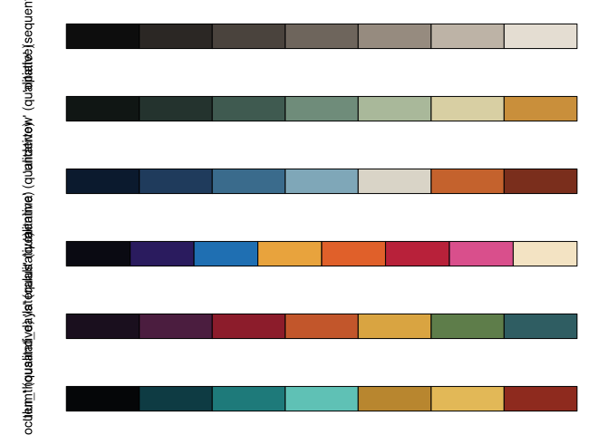
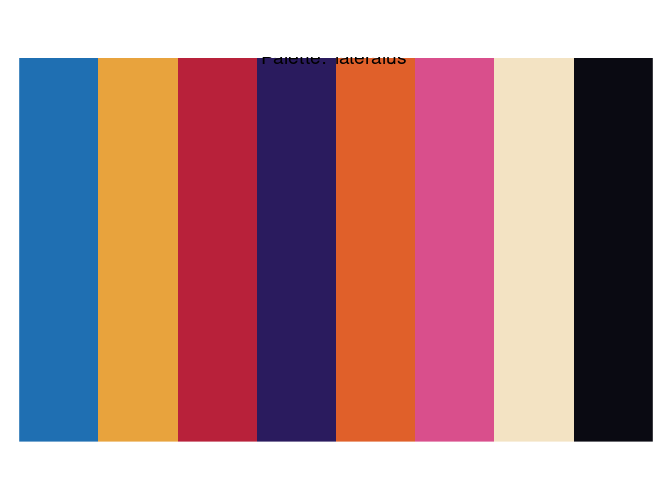
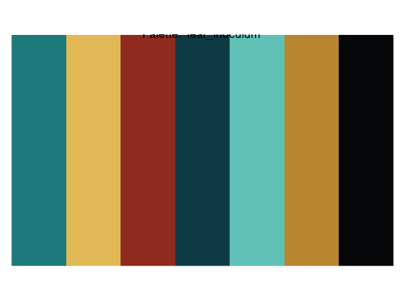
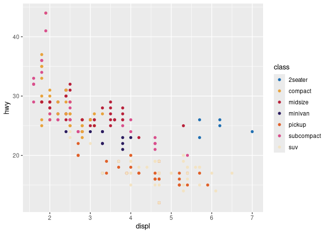
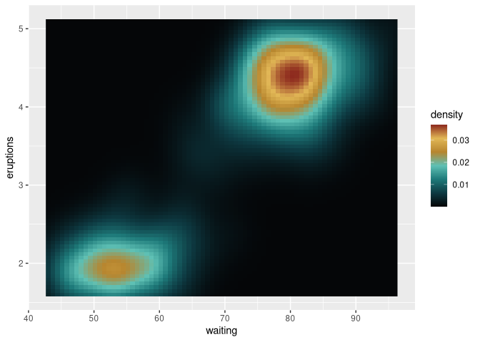

This package provides color palettes and ggplot2 color and fill scales inspired by the album artwork of Tool.
Disclaimer: This package is not affiliated with or endorsed by Tool or the artists. Palettes are interpretations inspired by the artwork.
Installation
You can install the development version of toolcolors from GitHub with:
# install.packages("pak")
pak::pak("ekholme/toolcolors")Example palettes
See all palettes at once:

Or display individual palettes:
print(tool_palette("lateralus"))
print(tool_palette("fear_inoculum"))
Usage
Discrete scales
library(ggplot2)
ggplot(mpg, aes(displ, hwy, color = class)) +
geom_point() +
scale_color_tool_d("lateralus")
Continuous scales
ggplot(faithfuld, aes(waiting, eruptions, fill = density)) +
geom_raster() +
scale_fill_tool_c("fear_inoculum")